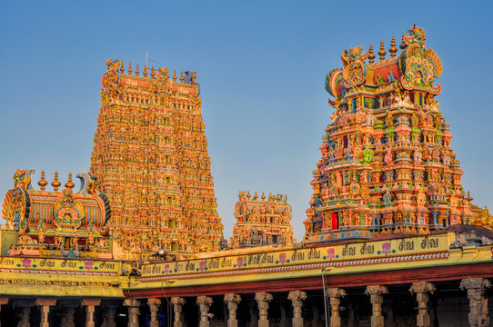
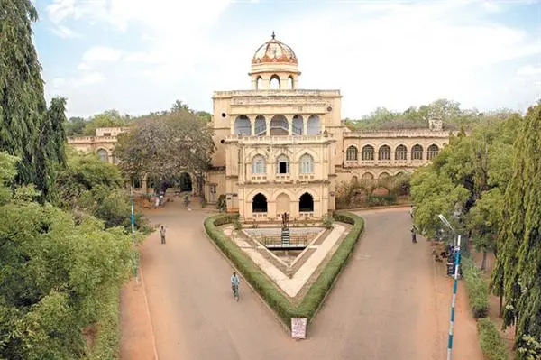

Explore the timeless beauty of madurai!
Madurai, in the southern state of Tamil Nadu, India, is one of the world’s oldest living cities. Known as the ‘Temple City’, it blends history, culture, and tradition in every corner. With its ancient charm and vibrant life, Madurai is a must-visit destination for travelers from around the globe. Begin your journey here — and find the perfect stay nearby..
1.Meenakshi amman temple

Meenakshi Amman Temple
The heart of Madurai, this temple is dedicated to Goddess Meenakshi and Lord Sundareswarar. According to legend, Lord Shiva himself came to Madurai to marry Goddess Meenakshi here. The temple is world-famous for its colorful gopurams (towers) filled with thousands of carved statues.
2.Thirumalai nayakkar mahal

Built in the 17th century by King Thirumalai Nayak, this palace is a masterpiece of Dravidian and Islamic architecture. With its huge pillars, royal courtyard, and evening light shows, it brings you back to the days of kings and queens.
3.Gandhi memorial museum

This museum is one of the five Gandhi Sangrahalayas in India. It displays rare pictures and items from Mahatma Gandhi’s life, including the blood-stained cloth he wore when he was assassinated. A must-visit for those who love history and India’s freedom story.
Madurai is not just a city, it’s an experience of history, culture, and devotion. Plan your trip today and let the Temple City welcome you with open arms.
---travel|explore|discover---